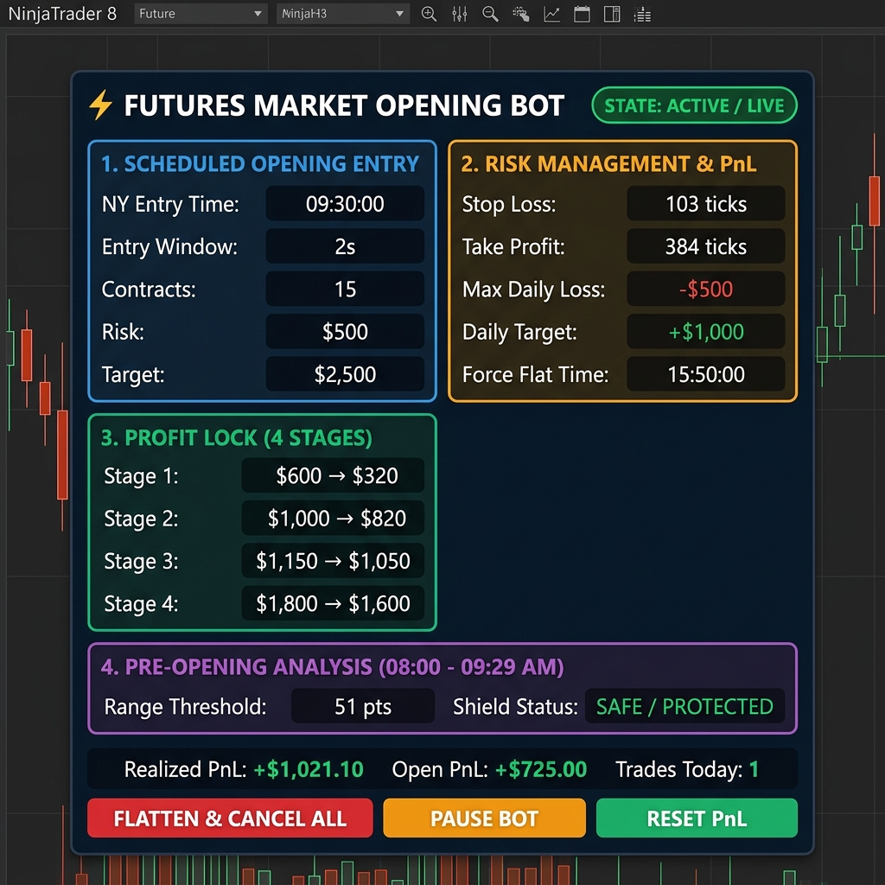
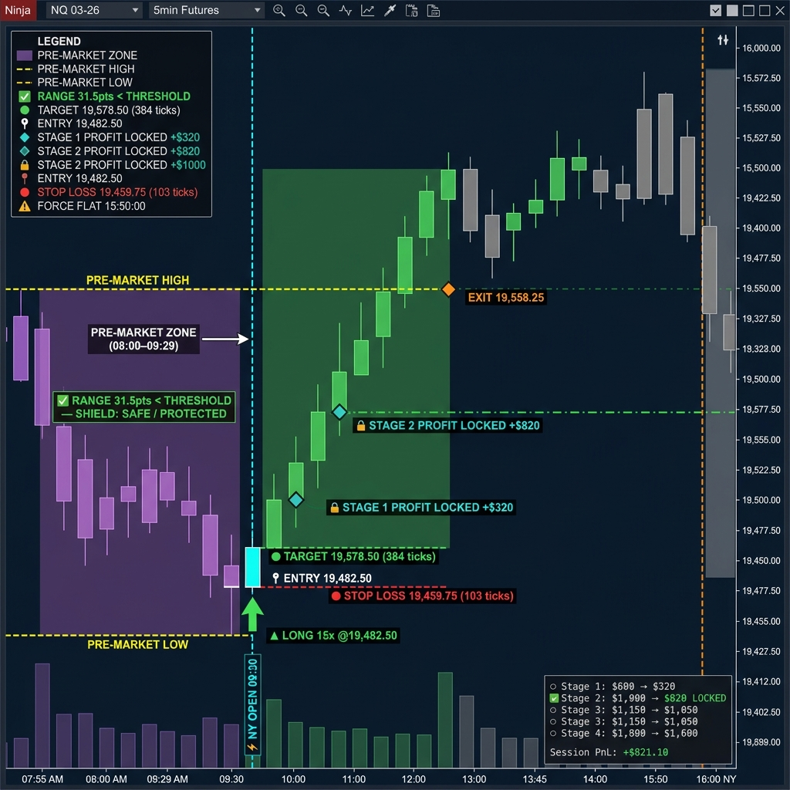
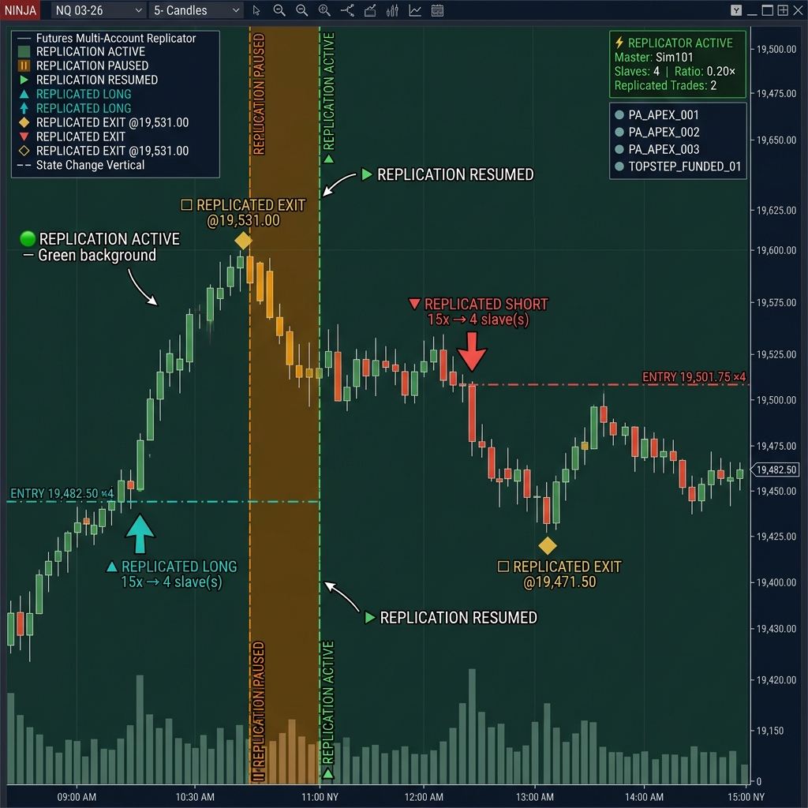

Manual Operativo Técnico y Explicativo Completo
NinjaTrader 8 • BotAperturaMercado • ReplicadorMulticuentaFuturos
🧠 1. AUTO-DETECCIÓN INTELIGENTE DE CUENTAS Y SALDOS
Configuración 100% Automática y Sin Intervención Manual:
- Bot de Apertura (`BotAperturaMercado`): Al iniciar, evalúa el saldo en USD (`CashValue`) y el nombre de la cuenta activa. Si la cuenta es de ~$50K asigna 2 contratos NQ (-$500 Max Loss); si es de ~$100K asigna 5 contratos NQ (-$1,000 Max Loss); si es de ~$150K asigna 15 contratos NQ (-$1,500 Max Loss).
- Replicador (`ReplicadorMulticuentaFuturos`): Con el parámetro
SlaveAccountNames = AUTO, el replicador detecta automáticamente todas las cuentas conectadas en NinjaTrader 8 (Apex, Topstep, etc.) y las sincroniza en tiempo real.
🤖 2. BOT DE APERTURA DE MERCADO (BotAperturaMercado.cs)
Estrategia automatizada para operar el quiebre y volatilidad de la Apertura de la Bolsa de Nueva York (09:30 AM EST) en los futuros del Nasdaq (NQ / MNQ).

Vista del Panel WPF HUD Overlay integrado directamente en el gráfico de NinjaTrader 8.
🎨 Dibujado de Análisis y Señales en Velas (Chart Painting)

Todas las herramientas de análisis, zonas, niveles y señales pintadas automáticamente sobre el gráfico de velas.
| Elemento Visual en Gráfico | Color / Estilo | Descripción Técnica y Función en Pantalla |
|---|---|---|
| Zona Pre-Mercado (08:00–09:29) | PÚRPURA | Fondo de velas teñido en violeta durante la sesión previa para marcar la ventana de análisis. |
| Líneas Pre-Mercado High / Low | ─ ─ ORQUÍDEA | Traza automáticamente los niveles máximos y mínimos alcanzados antes de la apertura de NY. |
| Línea NY Open (09:30 AM) | ⚡ CYAN | Marcador vertical punteado en la vela exacta de apertura de la bolsa de Nueva York. |
| Flechas de Entrada en Velas | ▲ VERDE / ▼ ROJO | Flecha gigante arriba (LONG) o abajo (SHORT) indicando contratos y precio exacto de ejecución. |
| Nivel de Precio de Entrada | ─── BLANCO | Línea horizontal fija en el precio exacto de entrada al mercado. |
| Stop Loss & Take Profit | 🔴 ROJO / 🟢 VERDE | Líneas horizontales dinámicas punteadas que se desplazan con la posición. |
| Etapas de Profit Lock (1-4) | 💎 DIAMANTE | Marcador de diamante y línea horizontal cuando el sistema bloquea ganancias en cada etapa. |
| Freno Force Flat (15:50 PM) | ⚠ NARANJA | Marcador vertical de cierre forzado de sesión antes del cierre oficial del mercado. |
📋 Desglose Detallado por Secciones y Campos
| Sección del Panel | Elemento / Campo | Explicación Técnica y Función Práctica |
|---|---|---|
| Encabezado Superior | BOT DE APERTURA FUTUROS | Nombre neutro del bot para operar contratos de futuros NQ/MNQ. |
| Encabezado Superior | ESTADO: ACTIVO / LIVE | Muestra ACTIVO (Verde) en sesión o BLOQUEADO POR PROTECCIÓN (Naranja) fuera de 09:30-15:50 EST. |
| 1. Apertura Programada | NY Entry Time (09:30:00) | Hora exacta fija del servidor para la entrada automática en la apertura de Nueva York. |
| 1. Apertura Programada | Entry Window (2s) | Tolerancia de 2 segundos. Cancela la orden si sufre deslizamiento o retraso superior a 2s. |
| 1. Apertura Programada | Contracts | Lotes asignados automáticamente según el saldo detectado (2 NQ para 50K, 15 NQ para 150K). |
| 1. Apertura Programada | Risk / Target ($500 / $2,500) | Mapeo monetario del riesgo inicial y el objetivo de ganancia proyectado del trade. |
| 2. Gestión de Riesgo | Stop Loss (103 ticks) | Distancia fija de protección de la orden Stop Loss inicial desde la entrada. |
| 2. Gestión de Riesgo | Take Profit (384 ticks) | Distancia fija de la orden Take Profit objetivo desde la entrada. |
| 2. Gestión de Riesgo | Max Daily Loss (-$500) | Freno Diario de Pérdida: Si el acumulado llega a -$500, liquida posiciones y bloquea el bot hoy. |
| 2. Gestión de Riesgo | Daily Target (+$1,000) | Freno Diario de Ganancia: Al alcanzar la meta diaria, apaga el robot para conservar las ganancias. |
| 2. Gestión de Riesgo | Force Flat Time (15:50:00) | Cierre forzado pre-cierre. Liquida cualquier posición abierta a las 3:50 PM EST. |
| 3. Profit Lock (4 Etapas) | Stage 1 ($600 ➔ $320) | Al ganar $600 ➔ El Trailing Stop sube automáticamente y asegura $320 de beneficio. |
| 3. Profit Lock (4 Etapas) | Stage 2 ($1,000 ➔ $820) | Al llegar a $1,000 ➔ Trailing Stop asegura $820. |
| 3. Profit Lock (4 Etapas) | Stage 3 ($1,150 ➔ $1,050) | Al llegar a $1,150 ➔ Trailing Stop asegura $1,050. |
| 3. Profit Lock (4 Etapas) | Stage 4 ($1,800 ➔ $1,600) | Al llegar a $1,800 ➔ Trailing Stop asegura $1,600 finales. |
| 4. Análisis Pre-Apertura | Range Threshold (51 pts) | Mide el rango entre 08:00 y 09:29 AM. Si supera 51 pts, activa el escudo de protección. |
| 4. Análisis Pre-Apertura | Shield Status (SAFE) | Muestra SAFE (Verde) si el pre-mercado está estable o ABORT (Rojo) si la volatilidad es peligrosa. |
🔘 Explicación Botón por Botón (Estrategia)
| Botón | Color / Estilo | Acción Inmediata al Hacer Clic |
|---|---|---|
| FLATTEN & CANCEL ALL | ROJO DE PÁNICO | Cierra inmediatamente cualquier posición abierta al precio actual y cancela órdenes pendientes (SL/TP). |
| PAUSE BOT | NARANJA CONTROL | Pausa la búsqueda de nuevas entradas sin cerrar la operación que ya esté activa. |
| RESET PnL | VERDE RESET | Reinicia a $0 el contador diario de pérdidas y ganancias para permitir volver a operar si tocó el límite. |
🔄 3. REPLICADOR MULTICUENTA DE FUTUROS (ReplicadorMulticuentaFuturos.cs)
Herramienta avanzada para copiar en tiempo real todas las ejecuciones desde una Cuenta Maestra hacia múltiples Cuentas Esclavas conectadas.

Vista del Panel WPF HUD Overlay integrado directamente en el gráfico de NinjaTrader 8.
🎨 Dibujado de Réplica en Velas (Chart Painting)

Marcadores de replicación de órdenes, niveles de ejecución y estado pintados sobre el gráfico.
| Elemento Visual en Gráfico | Color / Estilo | Descripción Técnica y Función en Pantalla |
|---|---|---|
| Fondo Replicación Activa | 🟢 VERDE TINT | Fondo de velas teñido suavemente de verde cuando la réplica está encendida y activa. |
| Fondo Replicación Pausada | 🟡 ÁMBAR TINT | Fondo teñido de ámbar con borde naranja cuando la replicación ha sido pausada. |
| Entradas Replicadas | ▲ TEAL / ▼ ROJO | Flechas arriba/abajo indicando el número de lotes copiado y la cantidad de cuentas esclavas. |
| Nivel Horizontal de Réplica | ─ · ─ NVEL | Línea horizontal punteada en el precio exacto donde se ejecutó la copia. |
| Salida Replicada | ◆ DORADO | Marcador de diamante dorado en la vela de cierre o salida de la posición. |
| Consola Status Flotante | [STATUS BOX] | Cuadro flotante en la esquina superior derecha con Maestra, Esclavas conectadas y total de trades. |
📋 Desglose Detallado por Secciones y Campos
| Sección del Panel | Elemento / Campo | Explicación Técnica y Función Práctica |
|---|---|---|
| Navegación Superior | [STATUS] [CUENTAS] [RIESGO] | Pestañas superiores para alternar entre estado de conexión, matriz de cuentas y ajustes. |
| Cuenta Maestra & Modo | Cuenta Maestra (Desplegable) | Selecciona la cuenta líder (ej: Sim101 o cuenta principal) desde donde se leen las entradas. |
| Cuenta Maestra & Modo | Copiar Entradas / Salidas | Habilita o deshabilita la copia de compras/ventas iniciales y las salidas parciales/totales. |
| Cuenta Maestra & Modo | Modo Inverso (Reverse Trade) | Si está activo, cuando la Maestra compre, las cuentas esclavas venderán (operación contraria). |
| Cuenta Maestra & Modo | Max Slippage (2 ticks) | Tolerancia de deslizamiento. Cancela la copia si la variación de precio supera 2 ticks. |
| Matriz de Cuentas Esclavas | Auto-Detección de Cuentas | Detecta y muestra automáticamente todas las cuentas conectadas (Apex, Topstep, etc.) en estado Conectado (Verde). |
| Matriz de Cuentas Esclavas | Ratio / Multiplicador | Proporción de lotes por cuenta (1.0x para igualar contratos, 0.2x para reducir lotes en 50K). |
| Opciones Avanzadas | Auto-Flatten por Desconexión | Protección Fail-Safe: Cierra automáticamente las posiciones esclavas si cae la conexión a internet. |
| Opciones Avanzadas | Sincronizar Cierre ATM | Replica exactamente los Stop Loss y Take Profits nativos de la cuenta Maestra en todas las esclavas. |
| Consola Inferior | Registro en Tiempo Real | Log en vivo que imprime cada orden replicada, hora exacta, cuenta destino y milisegundos de latencia. |
🔘 Explicación Botón por Botón (Replicador)
| Botón | Color / Estilo | Acción Inmediata al Hacer Clic |
|---|---|---|
| FLATTEN ALL SLAVES & PAUSE | ROJO DE PÁNICO | Cierra inmediatamente las posiciones en TODAS las cuentas de fondeo conectadas en 1 solo clic. |
| ACTIVAR REPLICACIÓN | VERDE ESTADO | Enciende o apaga la copia de órdenes entre la cuenta Maestra y las esclavas en tiempo real. |
| RE-SINCRONIZAR POSICIONES | AZUL SINCRO | Compara el inventario de contratos y fuerza la igualación exacta entre la cuenta Maestra y las esclavas. |
🛡️ 4. PROTECCIÓN OBLIGATORIA DE HORARIO DE MERCADO
Ambos bots operan bajo una estricta ventana de seguridad de 09:30:00 AM EST a 15:50:00 PM EST. Si intentas activar o dejar corriendo la estrategia fuera de esa ventana (noches, madrugadas o fines de semana), aparecerá el aviso en naranja ESTADO: BLOQUEADO POR PROTECCIÓN (FUERA DE HORARIO 09:30-15:50) para evitar ejecuciones accidentales con el mercado cerrado.